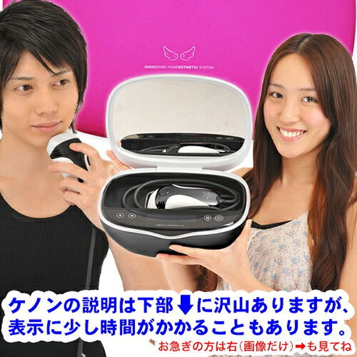
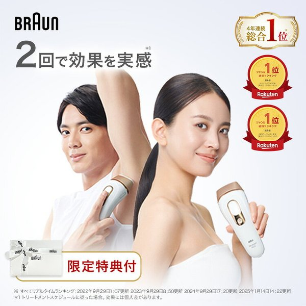
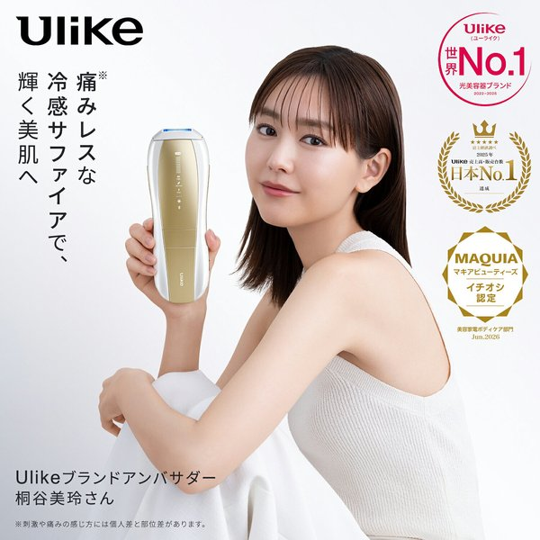
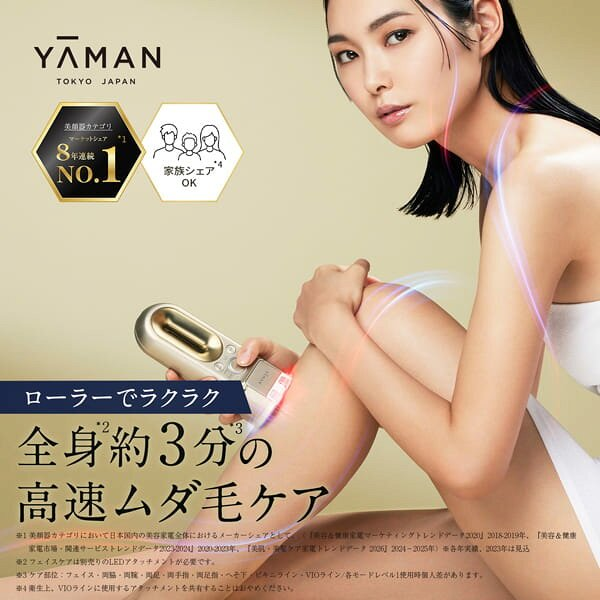
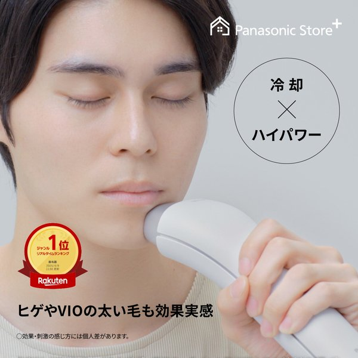
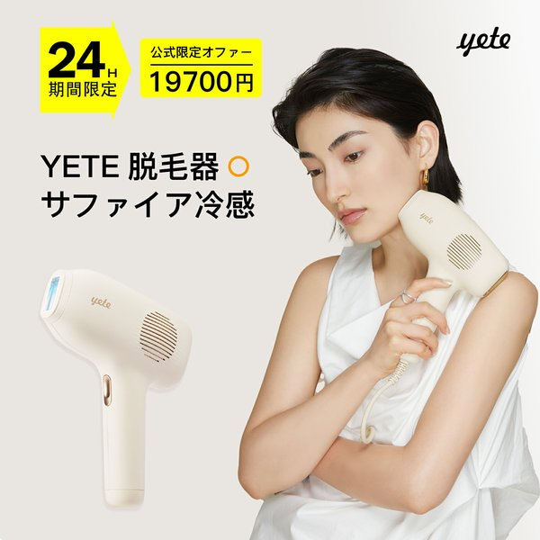
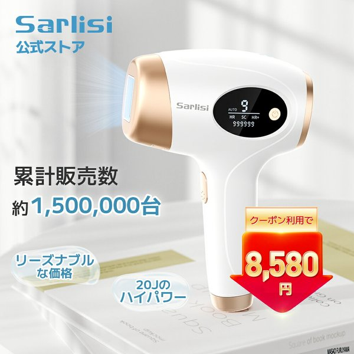
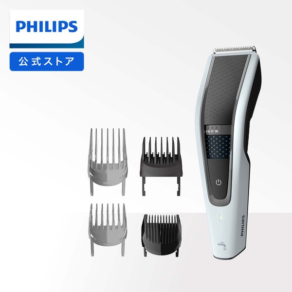
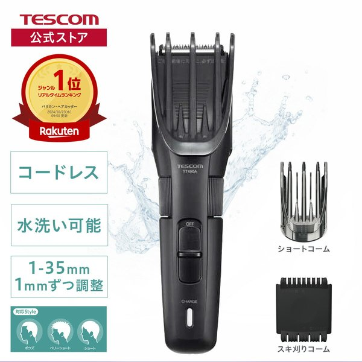
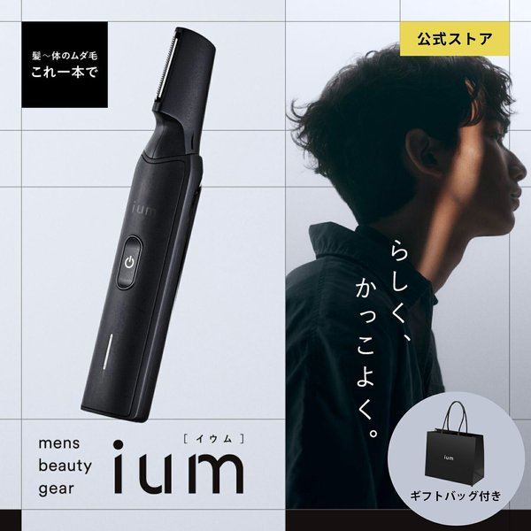

【2026年・家庭用脱毛】光美容器・ボディシェーバー＆電動バリカン10選｜ケノン・ブラウン シルクエキスパート PL-5157・Ulike Air 10 Max・ヤーマン レイボーテ・パナソニック スムースエピ・yete・Sarlisi・フィリップス・テスコム・iumを実売価格で比較
サロンに通う時間が取れない人にとって、家庭用の光美容器は現実的な選択肢です。とはいえ、全身用の光美容器と、すね毛を整えるボディシェーバーと、散髪用のバリカンは別の道具。用途を分けると、買い足す順番が見えてきます。
選ぶ軸は3つです。まず当てる場所。顔やVIOまで考えるなら冷却機能付きの光美容器、ヒゲとすね毛だけならボディシェーバーで足ります。次に肌の弱さ。冷却面のあるモデルは照射時の熱さを抑えられるぶん、続けやすいです。最後に家族で使うかどうか。共用するなら照射回数の上限がないモデルが安心です。なお、レビュー件数が50件に満たない商品は記事内に実数を明記しています。
本記事では、楽天市場で人気・高評価の家庭用光美容器・ボディシェーバー・電動バリカン10選を、実売価格とレビュー評価つきで写真付き紹介します。
- おすすめ10選 スペック・特徴比較表
- BEST 1｜ケノン 最新バージョン（家庭用光美容器・日本製）
- BEST 2｜ブラウン シルクエキスパート PL-5157
- BEST 3｜Ulike Air 10 Max IPL光美容器（2026年モデル）
- BEST 4｜ヤーマン レイボーテ ハイパーZERO スマート YJEA4N3
- BEST 5｜パナソニック スムースエピ パワー&クール ES-WG0B-H
- BEST 6｜yete 脱毛器（サファイア冷却・VIO対応）
- BEST 7｜Sarlisi 光美容器 SAJM01WH（メンズ・VIO対応）
- BEST 8｜フィリップス 5000シリーズ ヘアーカッター HC5610/60
- BEST 9｜テスコム ヘアーカッター TT490A
- BEST 10｜ium マルチトリマー（ボディシェーバー）
- 【読者負担0円】買わなくても得する無料サービス
- まとめ：光美容器・シェーバー・バリカン10選の選び方
| 順位 | 商品名 | ブランド | 最大の特徴・おすすめ理由 | 総合評価 |
|---|---|---|---|---|
| BEST 1 | ケノン 最新バージョン（家庭用光美容器・日本製） | ケノン（KE-NON） | 日本製で出力の切り替えが細かい | 4.33 |
| BEST 2 | ブラウン シルクエキスパート PL-5157 | ブラウン（Braun） | VIOにも使えるパワー | 4.41 |
| BEST 3 | Ulike Air 10 Max IPL光美容器（2026年モデル） | Ulike（ユーライク） | サファイア冷却で熱さを抑える | 4.47 |
| BEST 4 | ヤーマン レイボーテ ハイパーZERO スマート YJEA4N3 | ヤーマン（YA-MAN） | 転がすだけで広い面を処理できる | 4.32 |
| BEST 5 | パナソニック スムースエピ パワー&クール ES-WG0B-H | パナソニック（Panasonic） | 冷却しながら照射できる | 4.54 |
| BEST 6 | yete 脱毛器（サファイア冷却・VIO対応） | yete（エイティー） | 照射回数の上限がない | 4.44 |
| BEST 7 | Sarlisi 光美容器 SAJM01WH（メンズ・VIO対応） | Sarlisi（サーリシ） | メンズのヒゲにも使える | 4.24 |
| BEST 8 | フィリップス 5000シリーズ ヘアーカッター HC5610/60 | フィリップス（Philips） | 刃の自動研磨で手入れが簡単 | 4.60 |
| BEST 9 | テスコム ヘアーカッター TT490A | テスコム（TESCOM） | 1mm単位で長さを調整できる | 4.41 |
| BEST 10 | ium マルチトリマー（ボディシェーバー） | ium（マンダム） | I字型ヘッドで細部を整えやすい | 4.28 |
ケノン 最新バージョン（家庭用光美容器・日本製）

ケノンは、日本製の家庭用光美容器です。カートリッジを替えることで、全身から顔まで出力を選べます。照射回数の上限がなく、家族で共有しても消耗の心配が少ないのが特徴です。楽天市場での実売価格は約79,800円（2026年11月時点）。
- 日本製で出力の切り替えが細かい
- カートリッジ交換で顔にも使える
- 家族で共有できる
- 本体価格が高く、初めての人には投資が大きい
ブラウン シルクエキスパート PL-5157

ブラウンのシルクエキスパート PL-5157は、VIOにも使えるパワーを持つ光美容器です。肌に当てる面が冷却され、照射時の熱さを抑えます。毛の濃さに合わせて出力を自動で調整するので、苦手な部位にも当てやすいです。楽天市場での実売価格は約94,800円（2026年11月時点）。
- VIOにも使えるパワー
- 冷却面で照射の熱さを抑える
- 出力を自動で調整する
- 価格が高く、1回あたりの照射に時間がかかる
Ulike Air 10 Max IPL光美容器（2026年モデル）

UlikeのAir 10 Maxは、サファイア冷却を備えた光美容器です。冷却面がひんやりしたまま照射でき、肌の弱い人でも使いやすい設計。USHRモードで、ワキやヒゲの濃い毛にも短い間隔で当てられます。楽天市場での実売価格は約69,800円（2026年11月時点）。
- サファイア冷却で熱さを抑える
- USHRモードで濃い毛にも使える
- 顔から全身まで対応する
- 2026年モデルで実績が浅く、長期の耐久はまだ読めない
ヤーマン レイボーテ ハイパーZERO スマート YJEA4N3

ヤーマンのレイボーテ ハイパーZERO スマートは、ローラー式の光美容器です。転がすように当てるので、腕や脚の広い面を短時間で処理できます。小型軽量で、風呂上がりの数分でも続けやすいのが利点です。楽天市場での実売価格は約39,800円（2026年11月時点）。
- 転がすだけで広い面を処理できる
- 小型軽量で持ちやすい
- 全身に使える
- ローラーの当て方に慣れるまで時間がかかる
パナソニック スムースエピ パワー&クール ES-WG0B-H

パナソニックのスムースエピ パワー&クールは、冷たい照射面で肌を冷やしながら使う光美容器です。太い毛にも届く出力で、VIOやヒゲにも対応します。国内メーカーの最上位モデルで、初めての人にも操作が分かりやすいです。楽天市場での実売価格は約119,889円（2026年11月時点）。
- 冷却しながら照射できる
- 太い毛にも届く出力
- 操作が分かりやすい国内メーカー製
- 価格が高く、本体はやや大きい
yete 脱毛器（サファイア冷却・VIO対応）

yeteの脱毛器は、サファイア冷却を備えた家庭用光美容器です。照射回数の上限がなく、VIOにも使えます。SNSで人気が出たモデルで、価格を抑えながら冷却機能を備えています。楽天市場での実売価格は約35,800円（2026年11月時点）。
- 照射回数の上限がない
- サファイア冷却で熱さを抑える
- 価格を抑えて始められる
- 冷却の持続は上位機種より短く、連続使用では休ませる
Sarlisi 光美容器 SAJM01WH（メンズ・VIO対応）

Sarlisiの光美容器は、メンズのヒゲとVIOに対応したモデルです。自動照射モードがあり、全身に当てながら手を止められます。価格を抑えた入門機で、まず家庭用脱毛を試したい人に向きます。楽天市場での実売価格は約12,980円（2026年11月時点）。
- メンズのヒゲにも使える
- 自動照射で全身を処理できる
- 入門価格で試せる
- 上位機種より出力が控えめで、太い毛は回数が要る
フィリップス 5000シリーズ ヘアーカッター HC5610/60

フィリップスのヘアーカッターは、セルフカット用の電動バリカンです。刃が自動で研磨される仕組みで、オイルを差さずに使えます。防水で丸洗いでき、風呂場でも刈れます。楽天市場での実売価格は約6,999円（2026年11月時点）。
- 刃の自動研磨で手入れが簡単
- 防水で丸洗いできる
- コードレスで扱いやすい
- 付属のコームは長さの選択肢が限られ、細かい調整は苦手
テスコム ヘアーカッター TT490A

テスコムのTT490Aは、1〜35mmを1mm単位で調整できる電動バリカンです。コードレスと交流式の両方で使え、丸ごと水洗いできます。子どもの散髪から大人の刈り上げまで、1台で幅を持たせられます。楽天市場での実売価格は約3,339円（2026年11月時点）。
- 1mm単位で長さを調整できる
- コードレスと交流式の両用
- 丸ごと水洗いできる
- 充電に4時間かかり、急な散髪には向かない
ium マルチトリマー（ボディシェーバー）

iumのマルチトリマーは、マンダムのボディシェーバーです。I字型の細いヘッドで、VIOやすね毛、眉毛まで整えられます。防水で風呂場でも使え、全身用の1台として置いておけます。楽天市場での実売価格は約4,620円（2026年11月時点）。
- I字型ヘッドで細部を整えやすい
- 防水で風呂場でも使える
- 1台で全身の手入れが済む
- 広い面の処理は時間がかかる
この記事の商品を買う前に、まずは無料で得する選択肢をチェック。どれも登録・利用は0円で、無料期間中に解約すれば料金はかかりません。読みたい雑誌がある人、ポイントを貯めたい人、アンケートなら気軽という人、それぞれに合うものを選べます。
初回31日無料・無料期間中に解約すれば0円 → 楽天ポイントモール｜登録無料で毎日ポイ活
買い物なしでもポイントが貯まる無料サービス → 楽天インサイト｜アンケートに答えてポイント
登録無料・すきま時間のアンケートで貯まる → 楽天カード｜年会費永年無料
新規発行・年会費ずっと0円 →
4つのサービスの違いと使い分けは「出費0円で得する！買わずにポイントが貯まる無料サービス厳選4選」でまとめています。
💡 まとめ：光美容器・シェーバー・バリカン10選の選び方
家庭用脱毛は、光を当てる道具と、剃って整える道具を分けると続けやすくなります。全身を本格的にやるならケノンかブラウンのシルクエキスパート PL-5157、冷却を重視するならUlike Air 10 Max、短時間で広い面を処理したいならヤーマンのレイボーテ ハイパーZERO スマート、国内メーカーの操作感を求めるならパナソニックのスムースエピ パワー&クール。予算を抑えて始めるならyeteかSarlisiで、まずは週1回のペースを作るところから。ヒゲやすね毛の手入れはiumのマルチトリマー、家族の散髪はフィリップスのヘアーカッターかテスコムのTT490Aがあると、美容院に行けない週も整えられます。最初の1台は、当てたい場所を決めてから選ぶのが失敗の少ない順番です。
楽天市場では「5と0のつく日」や「お買い物マラソン」などのキャンペーンに合わせて購入すると、ポイント還元が最大化してお得に手に入ります。ぜひチェックしてみてくださいね。